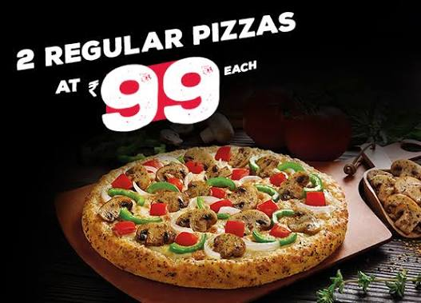
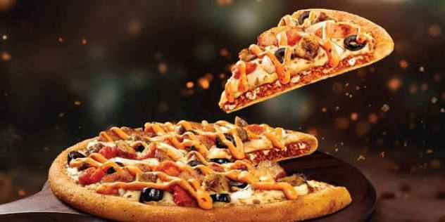
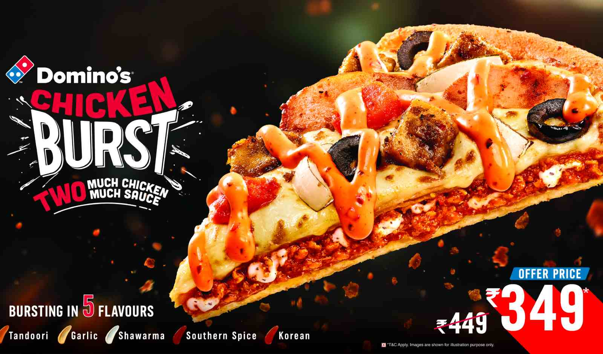
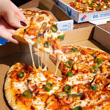
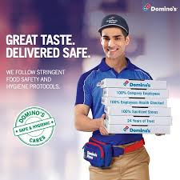
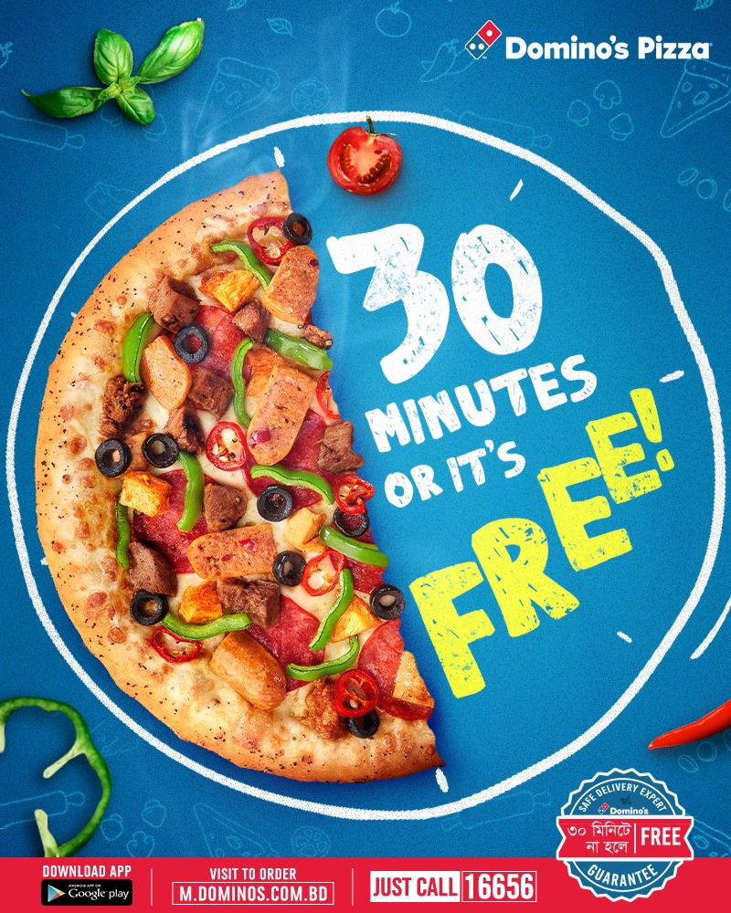

What's better than having a crispy melty pizza, you ask? Having that crispy and melty pizza in the comfort of your own home with the ones you love, we say. With Domino's it is always “Rishton ka time”. Whether it's a treat for your promotion, a kid topping his class or winning the heart of your wife who is too tired to cook after a long day at work! A cheesy slice of the best pizza is all one needs to put things into perspective and start any celebration. Plus, you do not even need to rush to the restaurant to have one now. A call, a few clicks on our website or a few touches on the mobile screen is all you have to do to have that tempting, light-on-the-pocket pizza at your doorstep. There is something for everyone here. The vegetarians, non-vegetarians, the sides’ lovers and also the ones who love to have something sweet by the time they reach the last bite of the last slice of pizza slice.

The icing on the cake or more aptly the extra cheese on your already fabulous pizza is that Domino’s takes only half an hour for its pizza delivery service. Don’t believe us? Time it if you please. With 1250+ stores present all over India, you can have a Domino’s pizza even while traveling on a train. Yes, you are reading it right, you can enjoy pizza on train too. So stop googling for the “pizza shops near me” and order from your nearest pizza outlet to have a hot box of pizza on your table in the next 30 minutes, or berth at the next halting station.